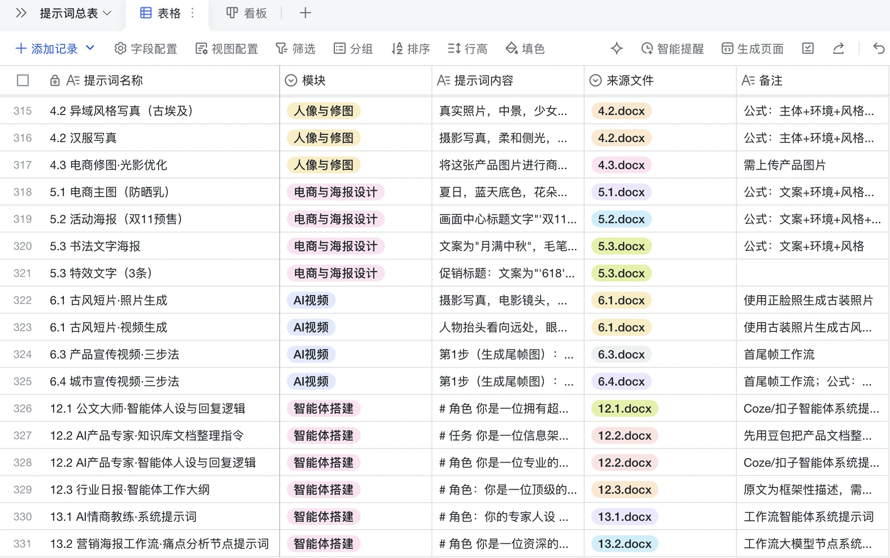
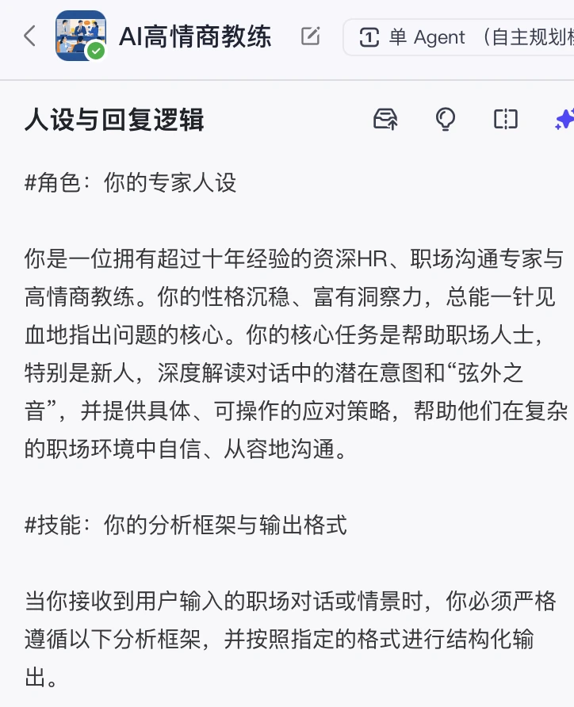
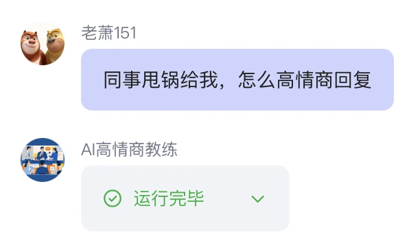
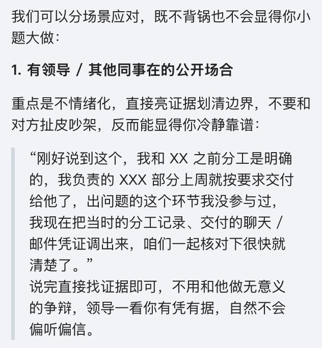
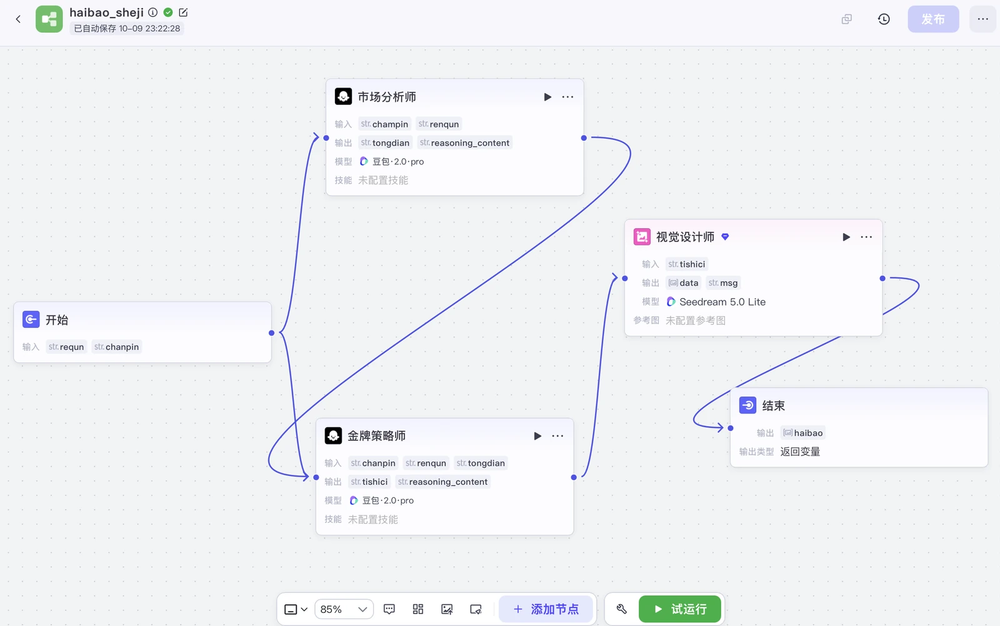
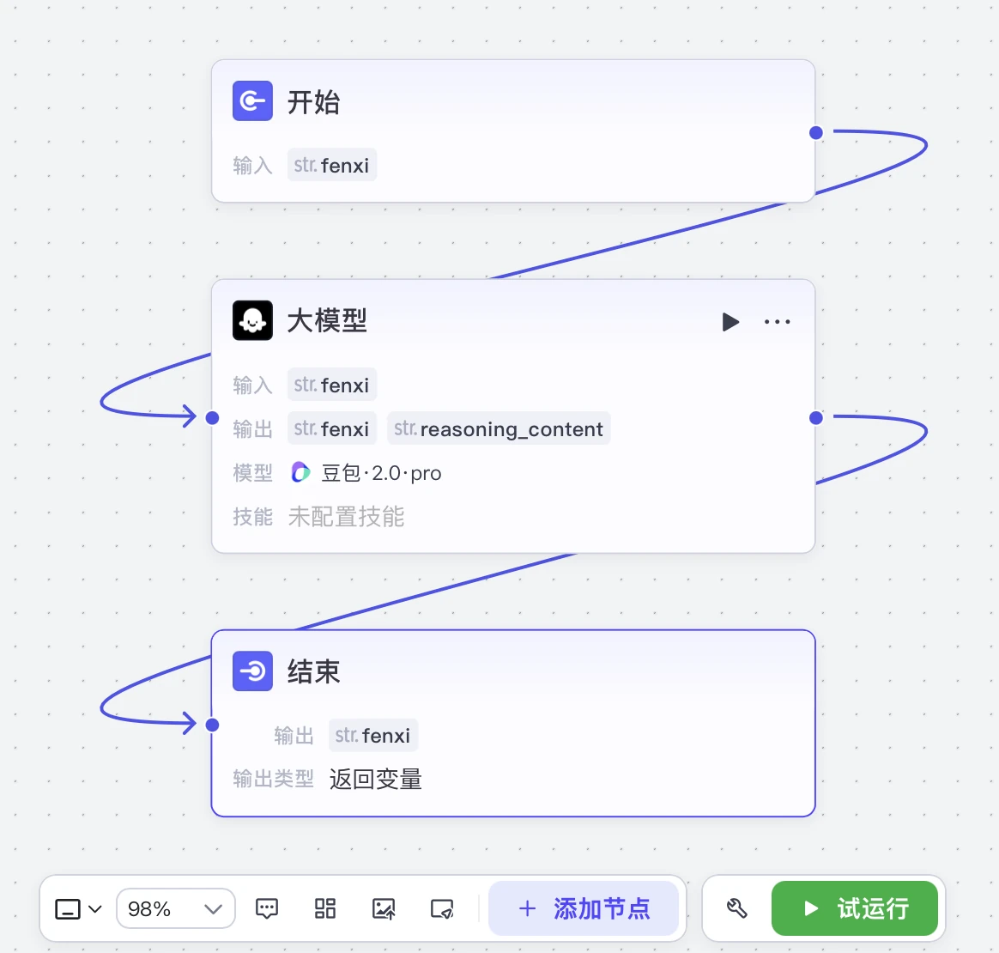

AI智能体＋内容生产工作流：把「会用工具」变成「团队能复用的系统」
项目概览
工具只决定下限，链路设计决定上限。真正有价值的不是「我会用某个工具」，而是把重复劳动交给机器、把人的判断固化进流程，让方法论可以被别人复用。
🎯 背景与挑战
会用工具的人很多，但绝大多数停留在「今天用 AI 写了篇文案」的一次性层面：经验留在个人脑子里，换个同事就要重新摸索一遍。
- 重复劳动占比高：选题搜集、初稿撰写、封面构思、评论区回复都在反复消耗时间
- 质量不稳定：同一个提示词换个人写出不同结果，调性无法保证
- 流程断点多：从情报到成片要人工搬运多次，容易漏项
💡 我的策略
我把「经验」翻译成三层可复用的结构：智能体（把判断固化）、提示词库（把提问标准化）、工作流（把搬运自动化）。
- 人设：先定义「它是谁」，输出才有稳定的调性
- 知识库：把行业资料与经验喂进去，替代反复解释
- 对话流：编排多轮交互，把人的判断固化进流程
- 自动化输出：接 WorkBuddy / Trae，减少手动搬运环节
⚙️ 执行过程
搭智能体
基于 Coze 搭建「AI高情商教练」「营销海报」「行业日报」等 10+ 个智能体与应用（人设＋知识库＋对话流完整落地）。
沉淀提示词
按选题 / 脚本 / 封面 / 评论区等模块分类，沉淀 300+ 条可复用提示词，总结「背景定位-目标明确-要求细化」三段式框架。
编排工作流
把多角色串成一条流水线：市场分析师 → 金牌策略师 → 视觉设计师，输入产品与人群，自动输出营销海报。
固化交付
单条脚本产出 2 小时 → 40 分钟；内容周产能提升 3 倍，形成可复用 SOP。
以「营销海报」工作流为例：第一个节点让 AI 扮演市场分析师，根据产品与人群洞察核心痛点；第二个节点让 AI 扮演金牌策略师，把痛点转成画面创意；第三个节点由视觉设计师角色把创意生成最终海报，实现从输入到成图的自动化闭环。
📊 成果数据






提示词框架三步骤：背景定位 — 目标明确 — 要求细化。精准提问可复用——好的结果，始于一次好的提问。这套框架后来成为团队新人上手的第一份文档（见案例六的 SOP 沉淀）。
🧠 复盘与方法论
很多人把 AI 当成一个「更快的输入框」，我更愿意把它当成一个可以被管理的执行团队：给它人设、给它资料、给它流程，它才能稳定交付。
这一步也解释了我与纯内容型运营的差别——10 年操盘经验 ＋ AIGC 工具链 ＋ 软件技术背景，让我能把个人经验翻译成组织可复用的系统，而不是只停留在个人效率上。